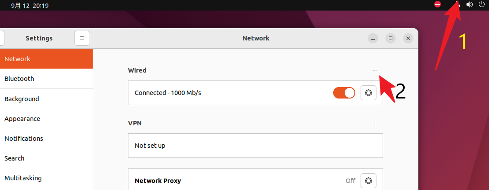
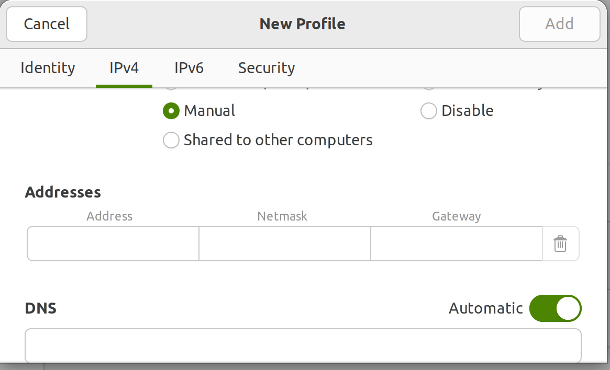
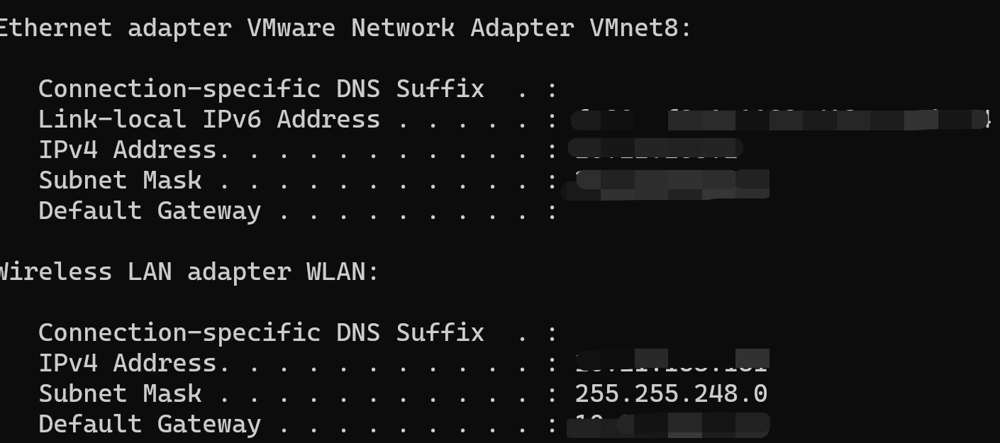

下载vmware workstation并安装ubuntu
下载好vm和ubuntu iso文件，一直下一步就好啦~
装好ubuntu后用apt下两个必要工具，vim用来编辑文件，net-tools用来查看网络状态
sudo apt install vim
sudo apt install net-tools
NAT联网，固定静态ip
概念简介
- ip:
用来
标识网络中的一台主机，ip地址由32位二进制数组成，分为网络号和主机号两部分，网络号用来标识网络，主机号用来标识主机。ip地址分为公网ip和私网ip，公网ip是可以直接访问的，私网ip只能在局域网内访问。ip地址分为ipv4和ipv6。 - 子网掩码：
用来标识ip地址中网络号和主机号的分界线，子网掩码也是32位二进制数，子网掩码中的网络号部分全为1，主机号部分全为0。子网掩码和ip地址进行
与运算，得到的结果就是网络号。子网掩码的作用是用来判断两台主机是否在同一个局域网内，如果两台主机的ip地址与子网掩码进行与运算，得到的结果相同，那么这两台主机就在同一个局域网内，可以直接通信，否则就需要通过路由器进行通信。 - 网关：
网关是一台主机，它的ip地址是局域网内的一个ip地址，顾名思义就是
公网与局域网之间的大门~网关的作用是将局域网内的数据转发到公网上，或者将公网上的数据转发到局域网内。网关的ip地址一般是局域网内的第一个ip地址，也就是网络号不变，主机号为0的ip地址。 - DNS：
DNS是一种域名解析服务，它的作用是将
域名解析成ip地址。
NAT联网
什么是NAT？
原理参考韩顺平linux
固定静态ip
在我们没有设置静态ip之前，默认是使用DHCP自动分配ip，也是可以上网的，但是每次重启虚拟机，ip地址都会变化，这样就不方便了。所以我们需要设置静态ip。
方法1：图形化界面
- 打开设置，选择网络，齿轮，选择Wired Settings
 - 点击齿轮，选择IPv4，选择Manual，填入ip地址，子网掩码，网关，DNS
 - 怎么确定这些值？
- 在windows主机上打开cmd，输入ipconfig，我们看的是vmnet8的ip地址，子网掩码，网关，DNS
- 在ubuntu填入值：
- ip:直接固定为DHCP分配的ip地址
- 子网掩码：与vmnet8保持一致
- 网关：vmnet8的ip地址
- DNS：8.8.8.8就行

- 点击Apply，然后重启网络服务。
方法2：命令行
按照方法1同样的数值配置修改相关参数
- 修改网络配置文件
//su进入根目录后
vim /etc/netplan/01-network-manager-all.yaml
//修改文件内容如下
network:
version: 2
renderer: NetworkManager
ethernets:
ens33:
dhcp4: no # 取消自动分配ip
addresses: [192.168.1.10/24] # 你的虚拟机的ipv4地址/子网掩码
routes:
- to: 0.0.0.0/0
via: 192.168.0.1 # 这里是你的网关地址
metric: 100
nameservers:
addresses: [8.8.8.8, 8.8.4.4] #DNS地址
- 重启网络服务，查看ip
sudo netplan apply
sudo systemctl restart NetworkManager
ifconfig
踩坑记录
su root显示 authentication failure
原因： 这是因为在Ubuntu中，默认情况下，root 用户是被禁用的，不允许直接登录。相反，Ubuntu鼓励使用 sudo 命令以普通用户的身份来执行需要超级用户权限的操作。
解决方法：
- 在普通用户的帐户下使用 sudo 命令来执行需要超级用户权限的操作。
sudo command_to_run_as_root
- 设置root密码
sudo passwd root
修改yaml后warning
有的教程写的是gateway4:…,
但提示warning: gateway4 has been deprecated, use default routes instead.
See the ‘Default routes’ section of the documentation for more details.
所以修改为
routes:
- to: 0.0.0.0/0*
via: 192.168.0.1 # 这里是你的网关地址
metric: 100
解释：
to: 0.0.0.0/0 表示所有非本地流量都将通过 via 字段指定的网关（你的网关地址）进行路由。metric 字段是一个可选的参数，用于指定路由的优先级，通常可以设置为100或更高。